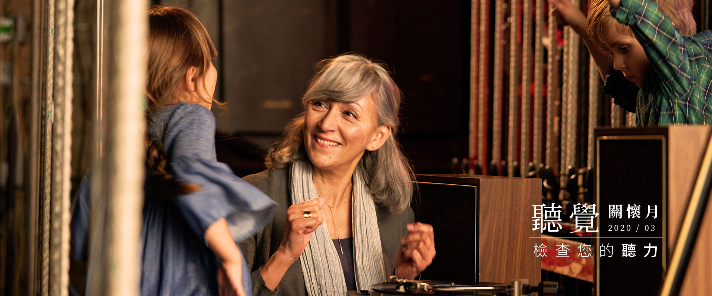

關於博士
最新消息
學術研討會
活動消息
產品新知
全國門市
產品介紹
助聽器
商品1-1
商品1-2
商品1-3
FM調頻系統
數位無線系統
周邊輔具
耳模資訊
影音專區
聽力保健
認識助聽器
其他
聽友分享
聽力專欄
社會福利
相關連結
第二層測試
第三層測試
第三層測試
第三層測試
第二層測試
全站搜尋

最新消息
NEWS
活動新聞
博士助聽器響應慈善公益！
博士助聽器致力於關懷國人的聽覺健康，拋磚引玉捐贈20部來自丹麥GN ReSound的高品質助聽輔具，以及10部藍牙電視音訊匯流器提供給弘道老人福利基金會，期盼能讓更多朋友一同共襄盛舉，並提升長者們的生活品質
2020-03-16
MORE
產品需知
RESOUND LiNX Quattro 產品發表會
博士助聽器致力於關懷國人的聽覺健康，拋磚引玉捐贈20部來自丹麥GN ReSound的高品質助聽輔具，以及10部藍牙電視音訊匯流器提供給弘道老人福利基金會，期盼能讓更多朋友一同共襄盛舉，並提升長者們的生活品質
2020-03-16
MORE
學術研討會
聽力學臨床實務研討會： 聽覺皮質電位檢測在助聽輔具效益評估的應用
博士助聽器致力於關懷國人的聽覺健康，拋磚引玉捐贈20部來自丹麥GN ReSound的高品質助聽輔具，以及10部藍牙電視音訊匯流器提供給弘道老人福利基金會，期盼能讓更多朋友一同共襄盛舉，並提升長者們的生活品質
2020-03-16
MORE
更多最新消息
聽友分享
REVIEWS
中壢門市
王阿姨
我發現聽力損失已經很久了，孝順的女兒們７、８年前就發現了，我發現聽力損失已經很久了孝順的女兒們７、８年前就發現了，我發現聽力損失已經很久了孝順的
五甲門市
劉小弟
我的小孩是一對雙胞胎兄弟，於２０１８年１２月在美國聖我的小孩是一對雙胞胎兄弟，於２０１８年１２月在美國聖
五甲門市
蔡阿姨
我是長期配戴的使用者，上一副助聽器是在離家比較我是長期配戴的使用者，上一副助聽器是在離家比較
更多聽友分享
產品介紹
PRODUCT
Starkey
Starkey Livio 1000a全新特仕版
MORE
PHONAK
CROS B 單側聽損使用者
MORE
PHONAK
Naída™ B 強力型助聽器
MORE
Starkey
Starkey Livio 1000a全新特仕版
MORE
Starkey
Starkey Livio 1000a全新特仕版
MORE
Starkey
Starkey Livio 1000a全新特仕版
MORE
更多產品介紹
聽力專欄
COLUMN
助聽器是怎麼放大聲音的？
隨著時代變遷，助聽器的普及率與接受度逐漸升高。然而仍有些民眾對於助聽器仍抱持著敬而遠之的態度：覺得讓談話者說話時說大聲一點就好，甚至配戴就好像必須面對自己在生理上有所缺失。其實就像看不清楚時得配眼鏡輔助、牙齒耗損可以訂製假牙、聽不清楚則能選配助聽器。
聽力師諮詢聽損者聆聽狀況
隨著時代變遷，助聽器的普及率與接受度逐漸升高。然而仍有些民眾對於助聽器仍抱持著敬而遠之的態度：覺得讓談話者說話時說大聲一點就好，甚至配戴就好像必須面對自己在生理上有所缺失。其實就像看不清楚時得配眼鏡輔助、牙齒耗損可以訂製假牙、聽不清楚則能選配助聽器。
選購助聽器有補助方案？
隨著時代變遷，助聽器的普及率與接受度逐漸升高。然而仍有些民眾對於助聽器仍抱持著敬而遠之的態度：覺得讓談話者說話時說大聲一點就好，甚至配戴就好像必須面對自己在生理上有所缺失。其實就像看不清楚時得配眼鏡輔助、牙齒耗損可以訂製假牙、聽不清楚則能選配助聽器。
助聽器的保養，你做對了嗎？
隨著時代變遷，助聽器的普及率與接受度逐漸升高。然而仍有些民眾對於助聽器仍抱持著敬而遠之的態度：覺得讓談話者說話時說大聲一點就好，甚至配戴就好像必須面對自己在生理上有所缺失。其實就像看不清楚時得配眼鏡輔助、牙齒耗損可以訂製假牙、聽不清楚則能選配助聽器。
配戴助聽器對生活的影響與改變
隨著時代變遷，助聽器的普及率與接受度逐漸升高。然而仍有些民眾對於助聽器仍抱持著敬而遠之的態度：覺得讓談話者說話時說大聲一點就好，甚至配戴就好像必須面對自己在生理上有所缺失。其實就像看不清楚時得配眼鏡輔助、牙齒耗損可以訂製假牙、聽不清楚則能選配助聽器。
配戴助聽器後回聽力中心的後續追蹤
隨著時代變遷，助聽器的普及率與接受度逐漸升高。然而仍有些民眾對於助聽器仍抱持著敬而遠之的態度：覺得讓談話者說話時說大聲一點就好，甚至配戴就好像必須面對自己在生理上有所缺失。其實就像看不清楚時得配眼鏡輔助、牙齒耗損可以訂製假牙、聽不清楚則能選配助聽器。
更多聽力專欄
聯絡我們
CONTACT US
聯絡我們
*
為必填
*
姓名
*
電話
地點
請選擇門市
基隆門市
台北復興門市
台北天母門市
*
信箱
*
性別
男
女
*
服務
預約免費聽力測試
助聽器選配
產品諮詢
助聽器維修
政府補助諮詢
FM教學調頻系統諮詢
其他意見
*
驗證碼
0800專線
0800-580-889
E-mail
website@drhearing.com.tw
簡訊服務
0952-586-757
TOP
首頁
關於博士
最新消息
學術研討會
活動消息
產品新知
全國門市
產品介紹
助聽器
商品1-1
商品1-2
商品1-3
FM調頻系統
數位無線系統
周邊輔具
耳模資訊
影音專區
聽力保健
認識助聽器
其他
聽友分享
聽力專欄
社會福利
相關連結